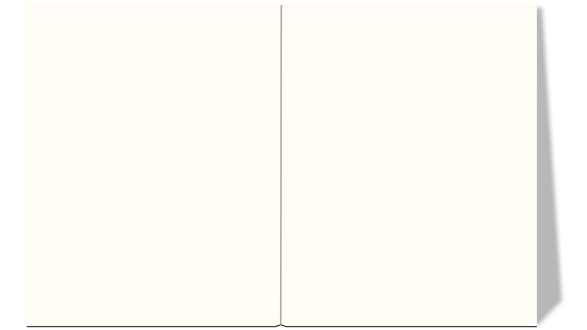

Med B-ESSENTIAL-appen, er der fokus på at fange brugerens opmærksomhed med skarpe farver og komplementærkontrast. Der er gjort brug af microcopy (forside, knapper osv) og der er lagt vægt på at lave et overskueligt købsflow for brugeren, der med kontrastfylte knapper guider brugeren gennem appen og til købsfunktionen.
Den gennemgående farve er grøn, der er trukket ud fra limefrugten, og de resterende farver komplimenterer denne i kontrast og intensitet. Der er kraft på farverne, men fordi de komplimenterer hinanden godt, giver det også en ro, så brugeren ikke farer vild og bliver skræmt væk.
USER EXPERIENCE


B-ESSENTIAL PROTOTYPE
Med B-ESSENTIAL-appen, er der fokus på at fange brugerens opmærksomhed med skarpe farver og komplementærkontrast. Der er gjort brug af microcopy (forside, knapper osv) og der er lagt vægt på at lave et overskueligt købsflow for brugeren, der med kontrastfylte knapper guider brugeren gennem appen og til købsfunktionen.
Den gennemgående farve er grøn, der er trukket ud fra limefrugten, og de resterende farver komplimenterer denne i kontrast og intensitet. Der er kraft på farverne, men fordi de komplimenterer hinanden godt, giver det også en ro, så brugeren ikke farer vild og bliver skræmt væk.
B-ESSENTIAL PROTOTYPE
Indholdet er ikke bare billeder af frugter. Det er lækre billeder, lavet i dagslys, for at hæve farverne og ‘lækkerheden’, så man får lyst til at købe dem. Frugterne er ydermere blendet, så man får et større incitament til at købe dem til sin bar, da hele pointen med at købe frugter hos B-ESSENTIAL er at bruge dem til drinks.
Der blev på dette produkt lavet en tænkehøjt-test, og brugeren var begejstret for oplevelsen, og synes at flowet fungerede nemt og smertefrit. Der var lidt problemer proportionelt med UI knapperne, som synes at være lidt sjove størrelserne.
DESIGN SPRINT
Vi skulle i designsprintet udvikle en app, til noget der manglede på KEA. Det kunne være alt fra et map over campus til datingapps.
Vi udviklede en app, der skulle gøre det nemmere at socialisere i klassen, når man startede på studiet.Vi valgte at lave denne app ud fra insigter vi fik fra eksperter, som i denne opgave var os selv og klassen:
- Ingen turde rykke sig fra deres pladser, som de satte sig på fra første dag.
- Svært at få sociale aktiviteter op at køre og får alle involveret.
- Ingen planlagte aktiviteter de første dage der kunne ryste os sammen.